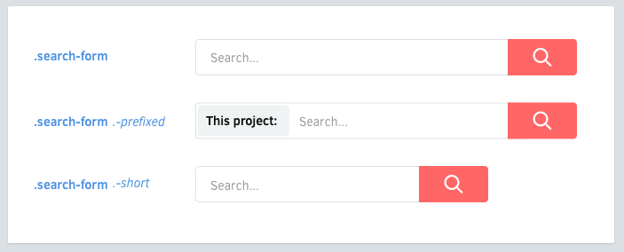

Components may have variants. Elements may have variants, too.

Classnames for variants will be prefixed by a dash (-).
.like-button {
&.-wide { /* ... */ }
&.-short { /* ... */ }
&.-disabled { /* ... */ }
}
Elements may also have variants.
.shopping-card {
> .title { /* ... */ }
> .title.-small { /* ... */ }
}
Dashes are the preferred prefix for variants.
_ or -.gcc -O2 -Wall -emit-last)